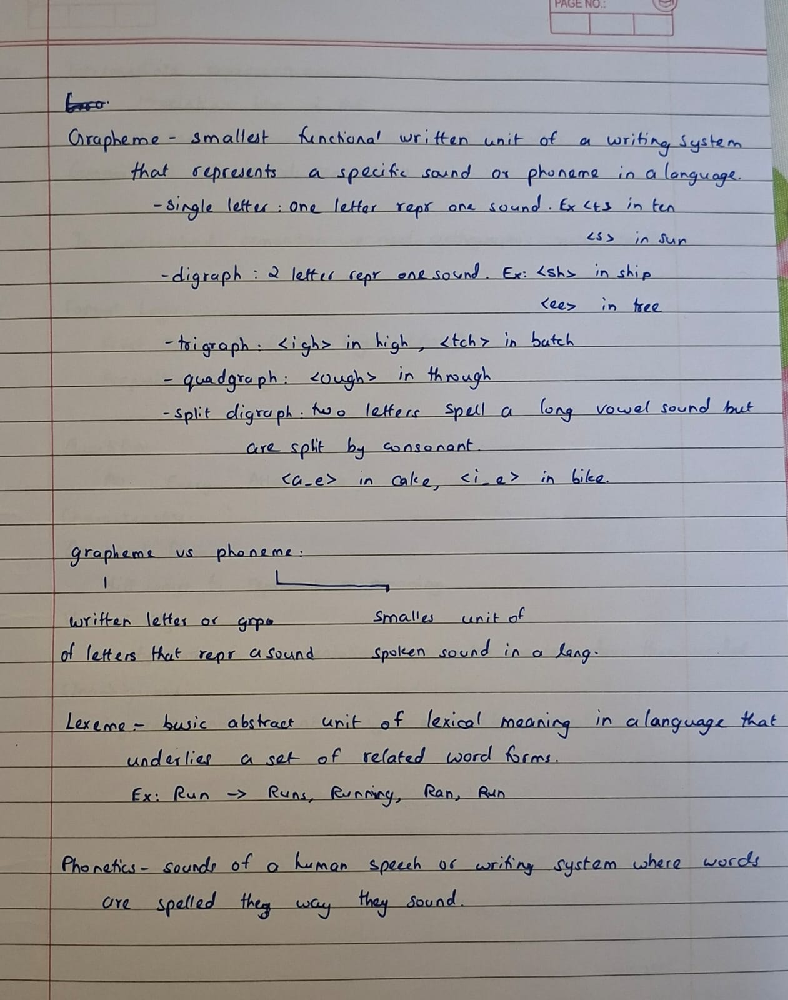
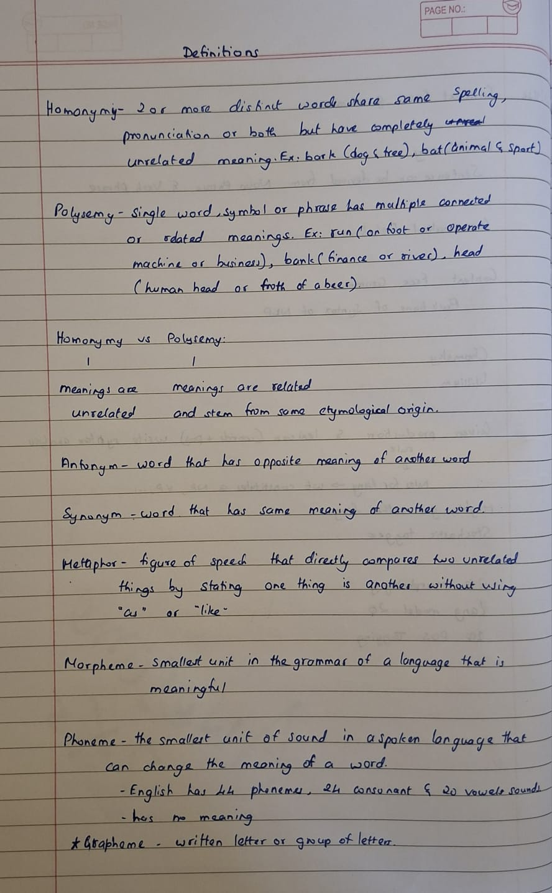

ACTIVITY 05
Definitions
Key terminology in language and writing systems. This activity contains handwritten definitions and examples covering writing systems, sound representation and lexical relationships. The notes include grapheme, phoneme, digraphs, trigraphs, lexemes, homonymy, polysemy, antonyms and synonyms.
Phonology · Orthography · Lexical SemanticsObjectives
- Review the terms used to describe written and spoken language.
- Distinguish graphemes and phonemes.
- Identify letter combinations such as digraphs and trigraphs.
- Understand lexemes and related word forms.
- Differentiate homonymy from polysemy.
- Recognise synonyms and antonyms.
Concepts & Implementation
Writing system and grapheme
Review the notes describing a writing system and a grapheme as a written representation.
Phoneme
Understand the distinction between a written unit and a speech sound.
Letter combinations
Review the examples of single-letter representations, digraphs, trigraphs and other multi-letter spellings.
Lexeme
Study the abstract lexical unit and related forms such as run, runs, running and ran.
Lexical relationships
Compare homonyms, polysemy, synonyms and antonyms using the examples in the notes.
Activity Materials
Click an image to view it at full size.


Learning Outcomes
- Revised terminology related to writing and sound representation.
- Distinguished several types of multi-letter spellings.
- Understood the concept of a lexeme.
- Differentiated homonymy and polysemy, and synonymy and antonymy.
Content on this page is organised from the materials supplied in the activity folder. Any interpretation beyond those materials has been kept to a minimum.